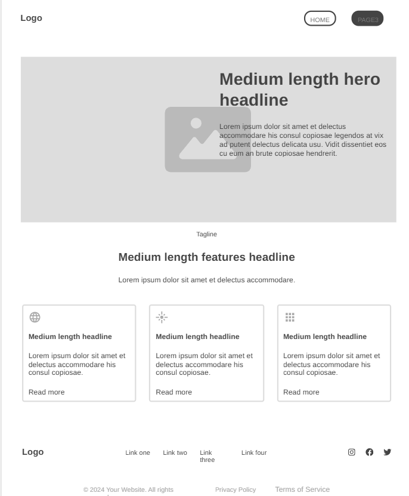

Overview
Purpose
The purpose of this site is to inspire and uplift visitors by sharing a new, meaningful word each day along with its definition, usage, and a motivational thought or scripture.
Audience
This site is for people who want to build their vocabulary, find inspiration, or start each day with something positive and thoughtful.
Dynamic elements
JavaScript will be used to randomly display a new "word of the day" from a list, highlight user favorites, and possibly include a search or filter feature for past words.
Branding
Website Logo
Style Guide
Color Palette
| Primary | Secondary | Accent 1 | Accent 2 |
|---|---|---|---|
Typography
Heading Font: Pangolin
Paragraph Font: Source Serif 4
Normal paragraph example
Discover a new word each day to challenge your mind and inspire your heart. Whether you're expanding your vocabulary or searching for a daily dose of wisdom, this site has something for everyone.
Colored paragraph example
Words have power. One meaningful word can change your mindset, guide your day, or spark a new perspective. Explore the beauty of language and be inspired!
Navigation
Site Map
Content
Home page
The Home page will feature the word of the day, including its pronunciation, part of speech, definition, and a brief explanation or inspirational quote that relates to the word. This page is meant to be uplifting, simple, and visually clean to encourage a positive start to the user's day.
Images for the Home page
Archive
The Archive page will allow users to explore previous words of the day. Each entry will include the word, its definition, and the date it was featured. Users may be able to sort or filter words alphabetically or by theme.
Images for the Archive page
About
The About page will explain the inspiration behind the Word of the Day site, including its mission to inspire, educate, and uplift through language. It will also introduce the creator and invite feedback or suggestions from visitors.
Images for the About page
Wireframes
Create three wireframes for your site. One for each page and list them here.
Home
This wireframe includes the word of the day prominently at the top, with definition, usage, and inspiration underneath.
page2
This wireframe shows a list or grid of past words with a search/filter tool to make browsing easy.

About
This wireframe displays a short intro, background story, and an optional contact or feedback section.